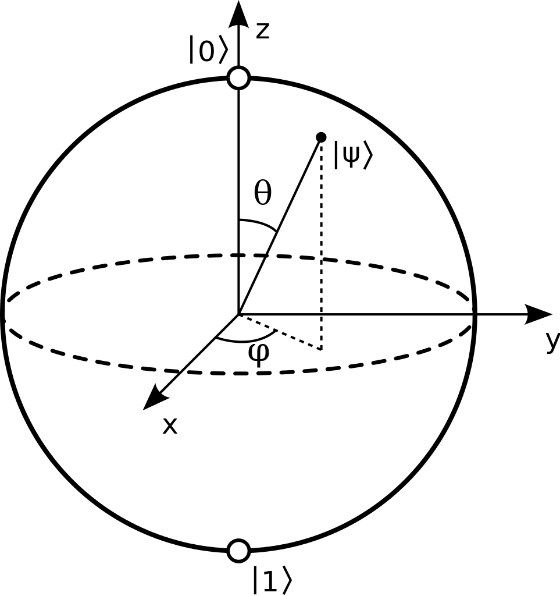
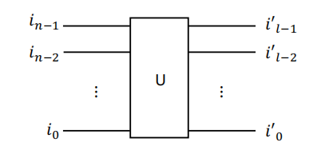
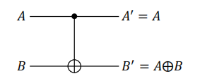

量子比特
Bloch球的表示
我们知道量子比特可用 Bloch 球表示，任意量子比特态都可以写成
∣ψ⟩=cos(2θ)∣0⟩+eiϕsin(2θ)∣1⟩

而球面上的点是无数的，那么一个量子比特是否能存储无限的信息呢？不行，因为量子态是不可克隆的，而读取会引起坍缩，无法通过无限次测量来精确读取量子态的信息。实际中，可用于量子计算的二能级系统也是十分少的。
测定三个泡利算符的平均值
⟨x⟩⟨y⟩⟨z⟩=⟨ψ∣σx∣ψ⟩=sinθcosϕ=⟨ψ∣σy∣ψ⟩=sinθsinϕ=⟨ψ∣σz∣ψ⟩=cosθ
即可确定量子态的位置
∣ψ⟩=21+z∣0⟩+2(1+z)x+iy∣1⟩
自旋的旋转
下面给出一个单比特幺正算符的简易计算公式
e−iσ⋅nϕ=cosϕ−i(σ⋅n)sinϕ
实际上，当 ϕ 很小时，e−iσ⋅nϕ 可展开为 1−i2ϕ(σ⋅n/2)，这对应 Bloch 球上绕 n 轴转动了 2ϕ 的角度；当 ϕ 为任意角时，e−iσ⋅nϕ 相当于进行了一个转动操作 Rn(2ϕ)。对任意角动量 J 绕 n 轴旋转 θ 度可表示为
Rn(θ)=e−iθJ⋅n
对自旋角动量 S=21σ，有
Rx(θ)Ry(θ)Rz(θ)=e−iθSx=e−i2θσx=cos2θI−isin2θσx=(cos2θ−isin2θ−isin2θcos2θ)=e−iθSy=e−i2θσy=cos2θI−isin2θσy=(cos2θsin2θ−sin2θcos2θ)=e−iθSz=e−i2θσz=cos2θI−isin2θσz=(e−i2θ00ei2θ)
通过上述操作，我们可以旋转 Bloch 球上的任意矢量 (θ1,ϕ1) 到 (θ2,ϕ2)
R∣ψ(θ1,ϕ1)⟩=∣ψ(θ2,ϕ2)⟩
R=Rz(2π+ϕ2)Rx(θ2−θ1)Rz(−2π−ϕ1)
Baker-Hausdorff 公式
例：在相互作用表象下，哈密顿量可写为
H=H0+V
其中 H0 是系统的自由哈密顿量，V 是相互作用项。一个态由薛定谔绘景变为相互作用绘景可以写为
∣ψ(t)⟩I=e−iH^0t∣ψ(t)⟩S
而一个算符由薛定谔绘景变为相互作用绘景可以写为
A^I=eiH^0tA^Se−iH^0t
形如上式的计算我们可以使用 Baker-Hausdorff 公式进行计算
eABe−A=B+[A,B]+2!1[A,[A,B]]+3!1[A,[A,[A,B]]]+⋯
实际上，由于算符与数的对易性，上式一般只有前两项不为零
利用上式，我们可以计算出 σ 在空间中旋转的幺正变换
eiϕσz/2σxe−iϕσz/2eiϕσz/2σye−iϕσz/2eiϕσy/2σxe−iϕσy/2eiϕσy/2σze−iϕσy/2=cosϕσx−sinϕσy=sinϕσx+cosϕσy=cosϕσx+sinϕσz=−sinϕσx+cosϕσz
n量子比特系统
一个由 n 个量子比特组成的系统称为大小为 n 的量子寄存器。
一组基 ∣i⟩:=∣in−1⟩⊗⋯⊗∣i1⟩⊗∣i0⟩，其中 ik∈{0,1}，构成一组 2n 维希尔伯特空间 H2n 内的正交完备基，空间内的任意态可表示为 2n 个基态的叠加
∣ψ⟩=i=0∑2n−1ci∣i⟩=in−1=0∑1⋯i1=0∑1i0=0∑1cin−1⋯i1i0∣in−1⟩⊗⋯⊗∣i1⟩⊗∣i0⟩
其中 ci 满足归一化条件 ∑i=02n−1∣ci∣2=1。
1.每个态都有 2×2n 个实数参数，但由于归一化条件和全局相位不可观测，实际自由参数为 2n+1−2 个实数参数。
2.每 n 个比特的经典系统只能储存 n 个比特的信息，而量子系统可以储存 2n+1−2 个实数参数的信息，信息量呈指数增长。
3.经典系统中也同样存在叠加，但由于 1024 个经典比特的叠加态需要 1024 个模式描述，需要 1024 个能级的能量，对能量的要求十分高。
4.由于量子叠加，量子计算天然可以进行并行计算。对一个相干叠加态进行一次幺正操作，就相当于对 2n 个基态同时进行了一次幺正操作，实现了并行计算。
U∣ψ⟩=Ui=0∑2n−1ci∣i⟩=i=0∑2n−1ciU∣i⟩
5.量子纠缠使得我们能够仅用 n 个相同的双态系统处理 2n 个不同的态。
量子计算的一般过程：
- 初态制备：使量子计算机初始化在态 ∣ψi⟩上。
- 量子控制：使用幺正算符控制初态的演化 ∣ψf⟩=U∣ψi⟩。
- 量子测量：对最终态 ∣ψf⟩ 进行测量，读取结果。
量子逻辑门
定义
逻辑门：逻辑函数的物理实现：{0,1}n→{0,1}m，其中 n 是输入比特数，m 是输出比特数。
量子逻辑门：
线路模型如下图所示，约定左边为输入，右边为输出。

其中，U 是一个幺正算符，实现 ∣ψout⟩=U∣ψin⟩，n=l，任意态可由 2n 个基态线性叠加而成
∣ψ⟩=i=0∑2n−1ci∣i⟩=in−1=0∑1⋯i1=0∑1i0=0∑1cin−1⋯i1i0∣in−1⟩⊗⋯⊗∣i1⟩⊗∣i0⟩
受控量子门
受控非门
根据输入和输出的量子比特数量，我们可以将量子逻辑门分为单比特门、双比特门和多比特门。常用的单比特门有恒等门 I、非门 X、相位门 P、Hadamard 门 H 等；常用的双比特门有受控非门 CNOT、交换门 SWAP、受控相移门 CP 等；多比特门有 Toffoli（C2−X） 门 和 C2−U 门等。由于受控非门 CNOT 可产生纠缠态，是量子计算中非常重要的双比特门，下面我们介绍受控非门。
若 A 为控制比特，B 为目标比特，则受控非门 CNOT 的作用为
CNOT∣A,B⟩=∣A⟩∣A⊕B⟩

我们可以得到 CNOT 的矩阵为
CNOT=1000010000010010
通用量子逻辑门
任意 n 比特量子逻辑门都可以分解成单比特门（H 门、相位门 P）和受控非门 CNOT。
任意 d 维幺正算符都可以分解为 k=d(d−1)/2 个只作用于二维子空间内的幺正操作的乘积。
对于一个作用在 n 个量子比特上的任意幺正算符 U，其希尔伯特空间的维数是 2n，而在一个二维希尔伯特子空间内的幺正操作，非对角元至多只有四个不为零。例如，作用在 ∣100⟩ 和 ∣010⟩ 子空间内的幺正操作 U 可表示为
U=11u010，010u100，0101u010，100u100，100111
其余维数的对角元均为 1，表示对其他子空间没有作用。若提取上述四个矩阵元
(u010，010u100，010u010，100u100，100)
则该矩阵是一个作用在 ∣010⟩ 和 ∣100⟩ 子空间内的单比特幺正操作 U2×2。
- U2×2 虽然只作用在二维子空间，但他不是一个单体操作。
- ∣100⟩ 和 ∣010⟩ 虽然是二维子空间的基，但U2×2 仍是一个非局域的操作，因为它作用在两个不同的量子比特上；而 ∣000⟩ 和 ∣100⟩ 组成的二维子空间内的幺正操作则是一个单体操作，因为它只需作用在一个量子比特上。